Drop Jolts onto 4 Money Bowls around the Map


Spin the Box until you get the Classic PPSH
Main Easter Egg
Open 3 Gas Valves around the Town, then Interact with the Sewer Trap


Turn on the Generator, then turn on the Power in the Bunker

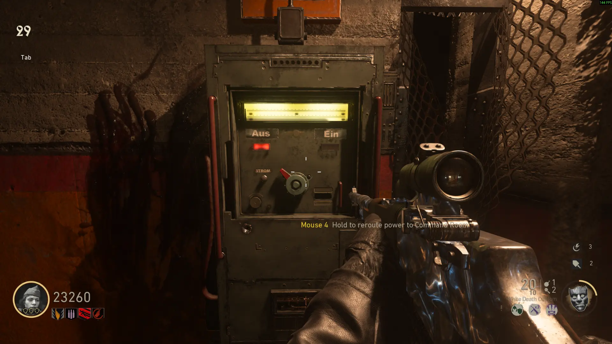
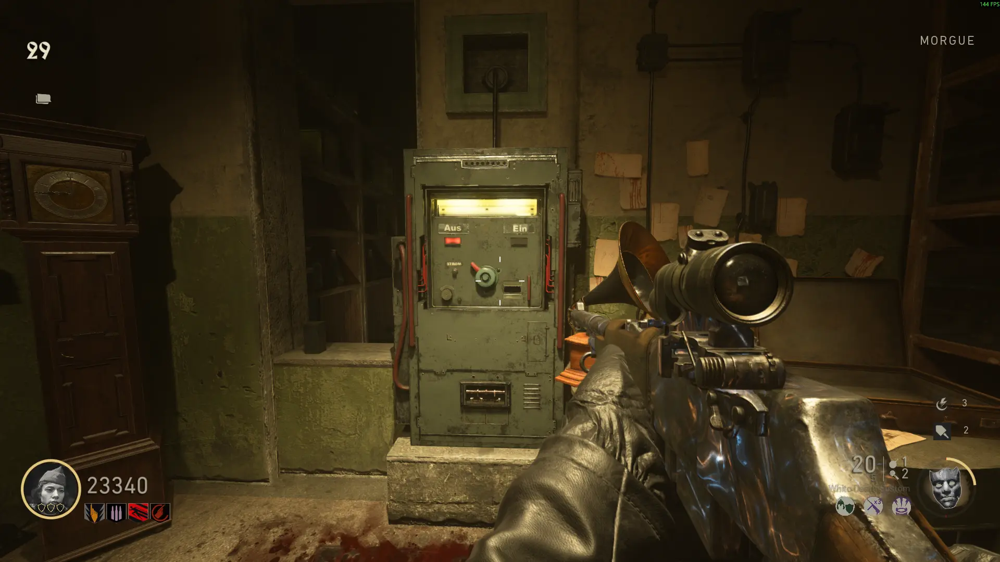
Open the Salt Mine Doots, Interact with the Hilt, then fill the Geistkraft Machine by Killing Zombies near it

Interact with the Machine at the top of the Command Center, then Escort the Geistkraft Machine by Killing Zombies near it

Pick up the Barrel and Core, then go back to the Command Center and pick up the Tesla Gun


Interact with the Panel on the wall behind the Tesla Gun and Note the Colors in Order
Go around the Map and set the Switch Panels to the Correct Color in Order


Defend the Lighning Tower Levers, then activate the Right Hand of God


Shoot the Orange/Red Lights on the Zeppelin until it drops an Ubershnelle, then Kill Zombies near it until the Battery Drops


Take the Battery to the Left Hand of God, then Repeat this 2 more times, then Activate the Left Hand of God (The third one will have to be shot down twice)


Shine the UV light from the Brenner's Head onto 4 Paintings around the Map and Take Note of the Number for each of the 4 Bird Symbols

This is the Point where you Choose whether to do the Casual Boss Fight or Continue for the Hardcore Boss Fight
**PREPARE FOR THE BOSS FIGHT**
Shoot the Hilt with the Tesla Gun, the Interact with it to Start the Boss Fight
Shoot the Glowing Lights on the Zeppelin, then fill the Ubershnelle
Stun the Boss by Shooting him, the Attach the Battery to him (You will see a Text Popup when the Boss is Stunned/Unstunned)
Wait for the Boss to Return to the Map, then Repeat the Process until you get the Ending Cutscene
Hardcore Easter Egg
Keepsakes
Interact with the Weather Vane near the Water Wheel, the go where it pointed and Shoot a small Yellow Circle on the wall using a Bullet Weapon
Pick up the 3 Colored Tops around the Map, then Place them on the Wall near the Bunker Entrance
Yellow
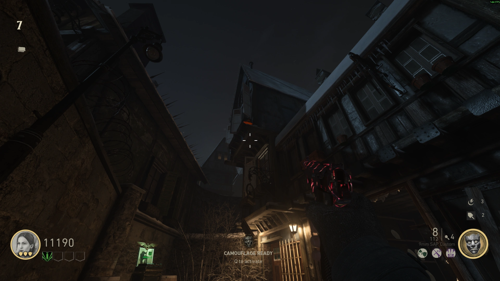
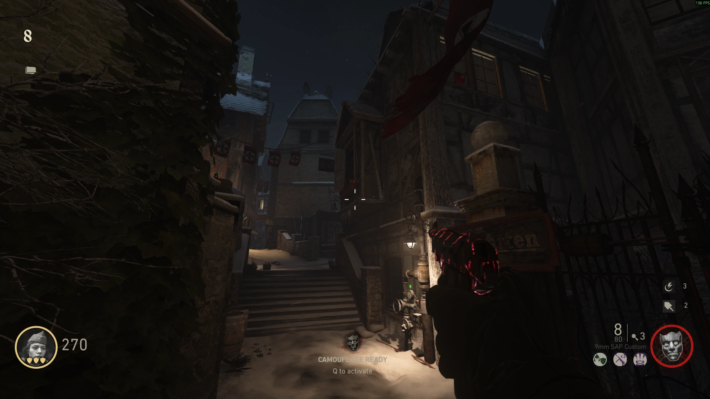

Red
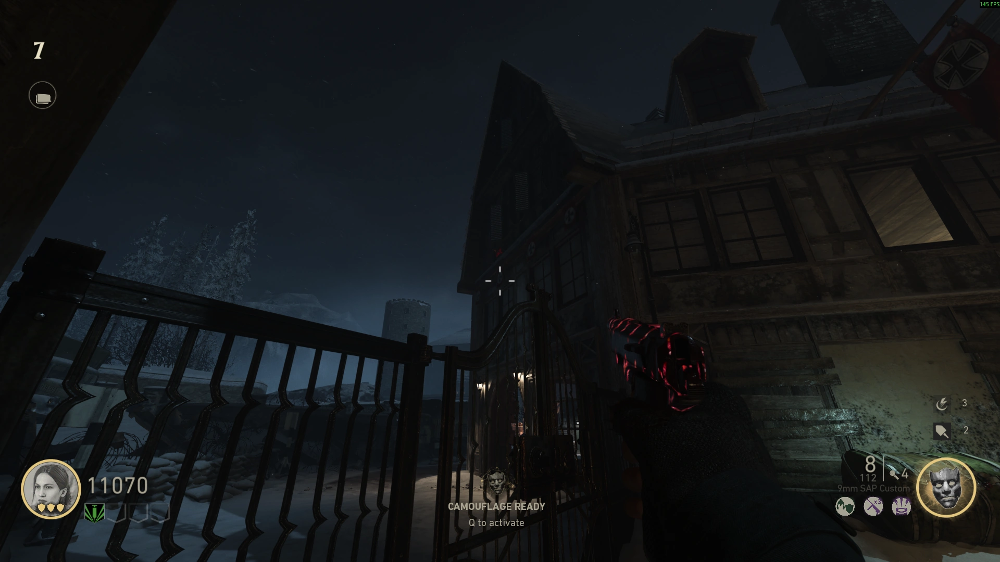
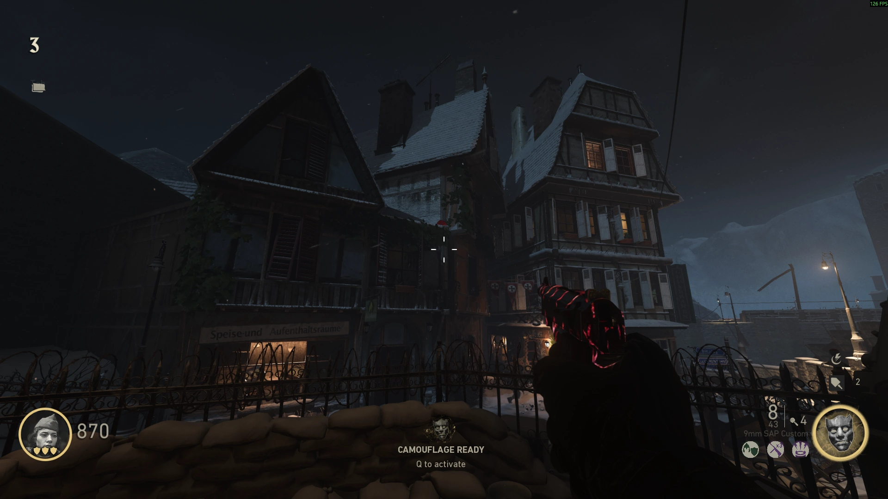
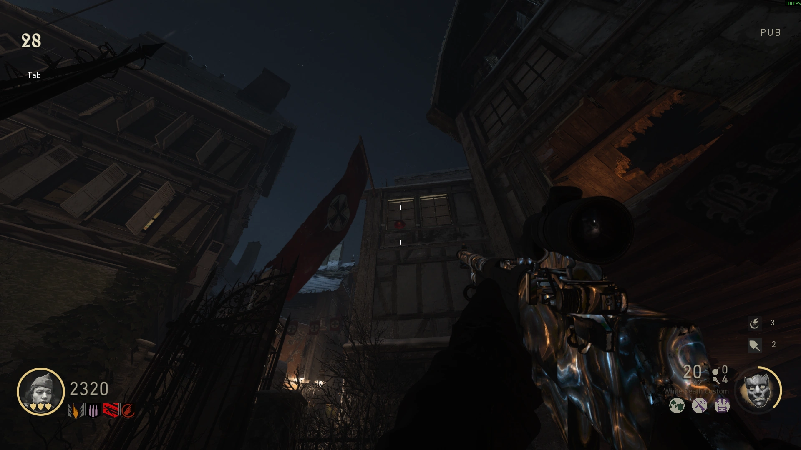
Green
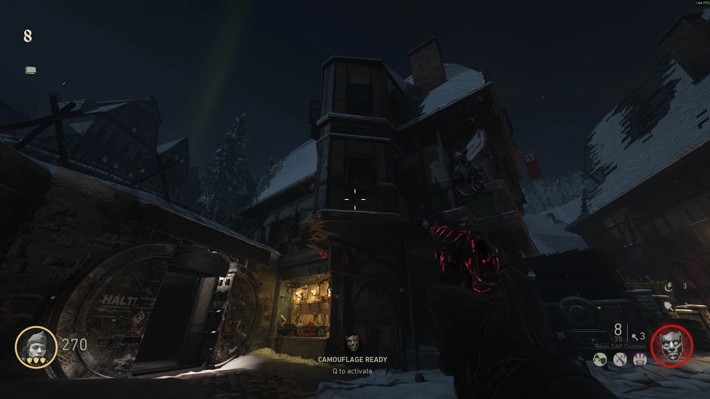
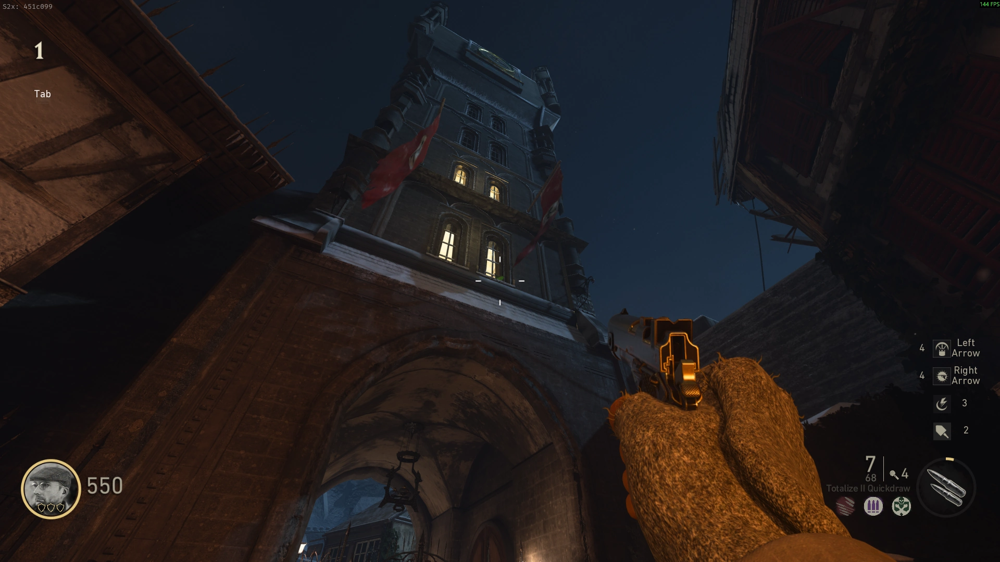

Enigma Machines
Find the Enigma Machines around the Map
Yellow
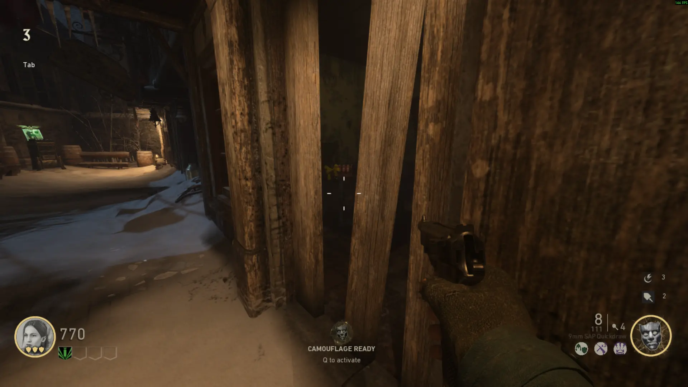


Red
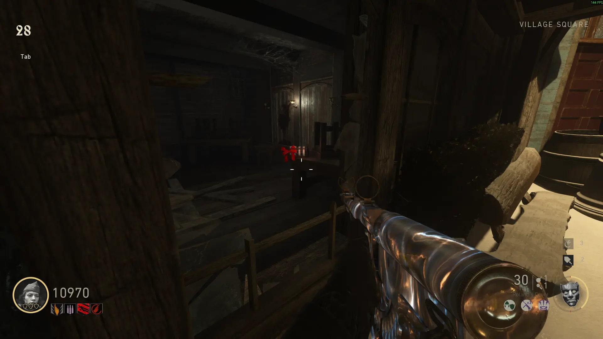
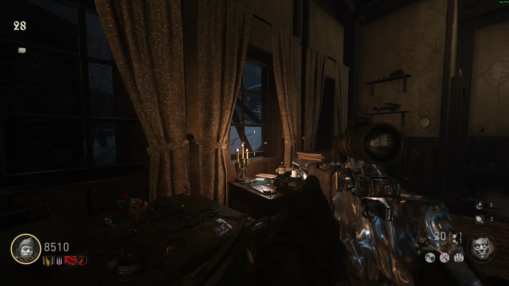

Green (Blue)
Use the Sewer Trap to launch yourself and interact with the wall above the Generator


Set the Tops on the Wall to the Numbers on the Enigma Machines (They act like a Clock)
Pick up the Record from the Drawer
Tesla Gun Upgrades
The Lightning Tower Defense Step needs to be Completed before you can start the Battery Defense Steps
Hurricane
Take a Bomber to the stairs near Electric Cherry and have him blow open the Panel on the Wall
Pick up the Battery and Place it into the Charger inside of the Electric Trap Hallway
Kill 2 Wustlings using the Electric Trap at the same time twice, then pick it up and place it into the Right Socket on the Wall near the Tesla Barrel Fabricator
Protect the Battery for 2 minutes, then Pick up the Barrel
Midnight
Obtain a Brenner Head, then Shine the Light onto the Statue on the Railing at the Cemetary, the pick up the Battery and Place it into the Charger
Kill Zombies using the Mine Trap until the Battery is Charged, then pick it up and place it into the Socket to the Left of the Tesla Barrel Fabricator
Protect the Battery for 2 minutes, then Pick up the Barrel
Bloodthirst
Shoot the Light near the Docks with the Tesla Gun, then with a Bullet Weapon
Follow the light to the Morgue by shooting the Sparking Light Bulb with a Bullet Weapon
Pick up the Battery and Place it in the Charger near the Wall
Kill 5 Pests, 5 times to Charge the Battery, then pick it up and place it into the Left Socket on the Wall near the Tesla Core Fabricator
Protect the Battery for 2 minutes, then Pick up the Core
Reaper
Make a Wustling Slam the Panel in Sewers, then pick up the Battery and place it into the Charger
Kill 2 Bombers using the Saw Trap at the same time twice to Charge the Battery, then pick it up and place it into the Right Socket on the Wall near the Tesla Core Fabricator
Protect the Battery for 2 minutes, then Pick up the Core
Raven Sword
Turn on the Power Switches again, then Turn on the Third Switch in the Contol Room
Shoot the Coils using the Tesla Gun to turn off the Lights
Shine the UV light from the Brenner's Head onto 2 Panels on each side of the Command Room while the Lights are off
Spin the Code Dials until all 5 have a Blue Fingerprint, then Pick up the Medallions
Interact with the Medallion behinf the Hilt in the Altar Room to get the Raven Sword
Record Player
Interact with the Weather Vane on the Stone Wall near the Bar
Find the Yellow Dot on a Wall in the Direction the Weather Vane is Pointing, then Shoot it with a Bullet Weapon
Shoot the Coils on the Waterwheel from the Docks
Place the Record in the Bar, then get a lot of Kills using the Raven Sword while the Song is Playing (Lasts around 1 minute)
You're done getting kills when the Music starts playing Backwards and you hear a Ticking Sound
Obtain all 4 Tesla Gun Upgrades, the count the Green Flashes on the left side of the Record Player in Order (The Red Light indicates the Start of the Sequence)
Enter the Code into the Voice of God, starting from the Left ((You will know if it's correct if you can't interact witht he Voice of God again)
Shoot the Ring above the Hilt with all 4 Tesla Guns (The Ring will Glow if done Correctly)
**PREPARE FOR THE BOSS FIGHT**
Shoot the Hilt with the Tesla Gun, the Interact with it to Start the Boss Fight
Shoot the Glowing Light on the Zeppelin, then fill the Ubershnelle
Stun the Boss by Shooting him, the Attach the Battery to him (You will see a Text Popup when the Boss is Stunned/Unstunned)
Wait for the Boss to Return to the Map, then Repeat the Process until you get a Cutscene
Escort Klaus to the Sewer Trap (Stay near him for Infinite Ammo)